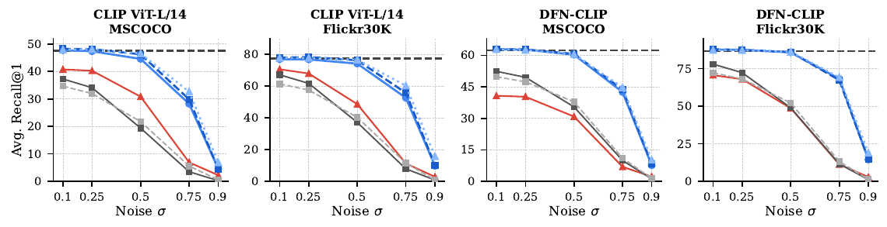
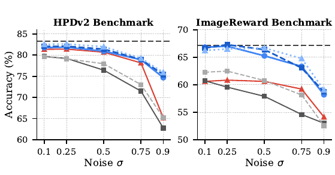
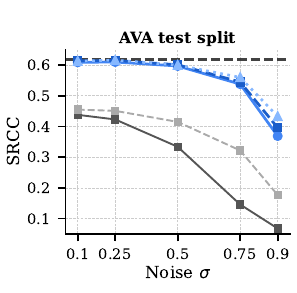
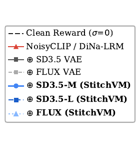
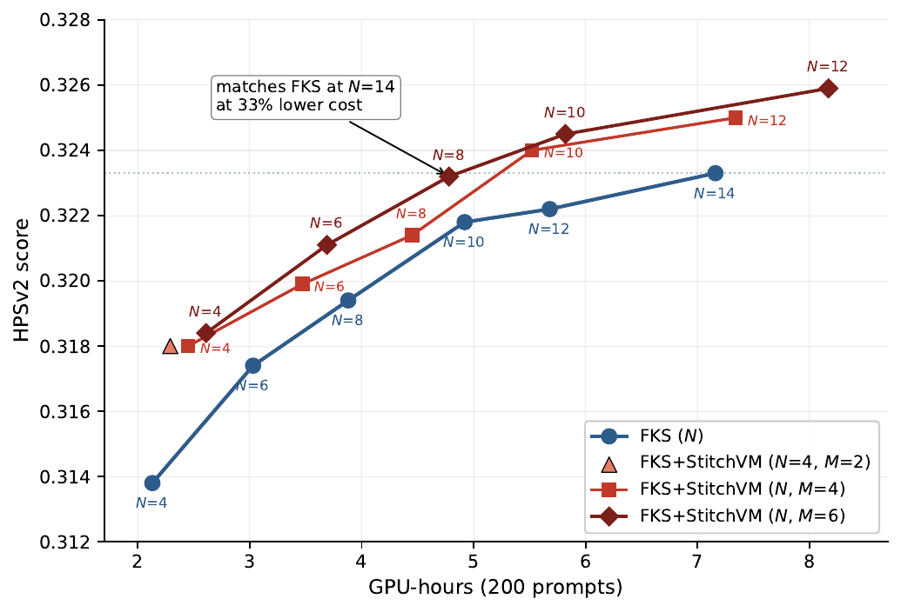
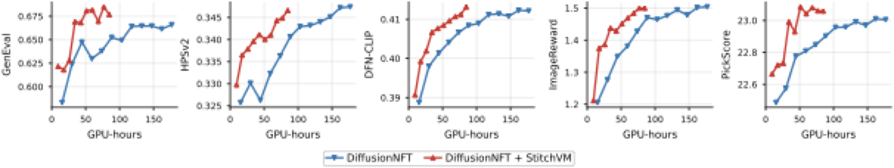

StitchVM: Stitched Value Model for Diffusion Alignment
Preprint · 2026


1ETH Zürich· 2Google· 3University of Copenhagen
Preprint · 2026
1ETH Zürich· 2Google· 3University of Copenhagen
Same reward model — now scoring noisy diffusion latents directly, at the quality you expect on clean images. The first practical recipe.
②What we do
③The impact
One fix Replace the heavy effort to denoise a noisy latent to calculate a pixel reward → with a direct StitchVM score. The four wins that fall out ↓
DPS
3.2× faster
↓50% peak GPU memory
FK steering
33% lower cost
new $M$-scaling axis
DRaFT
22–26% GPU-h saved
+ higher quality
DiffusionNFT
55%+ GPU-h saved
same plateau, half the compute
Most diffusion alignment methods come down to answering this question along the denoising trajectory.
Diffusion sampling will turn the noisy latent $\mathbf z_t$ into a final generation $\mathbf x_0$. Every alignment method has to answer this from a glance at $\mathbf z_t$ alone: how valuable will the final $\mathbf x_0$ be?
Formally, this is the value function $V_t(\mathbf z_t)$ — the expected reward of the clean image $\mathbf z_t$ will eventually denoise to:
$$V_t(\mathbf z_t) \;=\; \mathbb E\!\left[\,r(\mathbf z_0)\,\big|\,\mathbf z_t\right].$$
Across both inference-time and training-time alignment, evaluating $V_t$ is the common need — three examples:
Why $V_t$? Sampling from the reward-tilted target $p^\star$ is provably equivalent to running the pretrained sampler with this single drift correction by $\nabla_{\mathbf z_t} V_t$. Without that gradient, the sampler has no way to bias trajectories toward higher reward.
Why $V_t$? Whatever $f$ is, the resampling weight is built from $V_t$ evaluations. Without $V_t$, the resampling has no signal to prefer promising particles over the rest.
Why $V_t$? Either approach needs a reward signal at intermediate noisy $\mathbf z_t$: direct finetuning backpropagates through the trajectory, RL methods use the expected reward at $\mathbf z_t$. That expected reward is $V_t$. Existing work falls back to full Monte Carlo rollouts (denoise all the way to a clean image to evaluate $r$), which are slow and provide no signal at high-noise steps.
So methods approximate $V_t$ instead — each approximation with cost and estimation problems.
Why not just learn $V_t$ directly? It would be the cleanest fix — no bias, no variance, no extra evaluations — and would drop into every alignment method above. The community has sidelined this option not because it isn't desirable, but because building such a model has been hard.
Matching the strength of a foundation-scale pixel reward model (CLIP, HPSv2, Aesthetic Predictor) on noisy latents requires roughly their training scale, and the result would have to be re-trained for every new diffusion backbone or reward. Smaller-scale or feature-reuse approaches trade away exactly the capability that made the pixel reward model worth using in the first place.
So existing methods approximate $V_t$. Two workarounds dominate — each with its own price, shown below:
The community has long settled for the red rows above — not because they are good, but because building a noisy-latent $V_t$ at pixel-reward quality has meant training from scratch at foundation scale, re-done for every new backbone or reward. StitchVM avoids that: it transfers, instead of retraining.
At the cost of a short finetune — not retraining anything from scratch.
Why this works: at the right depth, the internal features of a pretrained diffusion model are almost linearly compatible with those of a pretrained pixel reward model. So we keep the head of the diffusion model frozen (already native to noisy latents), keep the tail of the reward model (it already produces the score), and join them with a small stitching layer — initialised by a closed-form linear fit, then briefly finetuned together with the reward tail on unlabeled images. The stitched model inherits the reward model's predictive skill, but now operates directly on noisy latents.
The result is a noisy-latent value model at pixel-reward quality, built in hours on a single GPU — no training from scratch, just a transfer.
④ THE REACH · WHY IT MATTERS
Build $V_t$ once. Drop it into every alignment recipe — inference-time guidance, particle sampling, training-time finetuning — and watch each one get cheaper at the same time.
INFERENCE-TIME ALIGNMENT
DPS guides denoising by adding $c\,\nabla V_t$ to the velocity field at every step — so the gradient's quality and cost both matter. Standard DPS plugs Tweedie's approximation $V_t \approx r(\mathcal{D}(\text{denoiser}(\mathbf z_t)))$ into the gradient, which forces backprop through the reward, the VAE decoder, and the denoiser, and inherits Jensen-gap bias. StitchVM replaces all of that with a learned $V_t$ that consumes $\mathbf z_t$ directly: $\nabla_{\mathbf z_t} V_t$ is one autograd call, with no decoder differentiation and no Tweedie approximation — faster gradient, less bias, especially in high-noise regions.
Standard FK steering scales along one axis — more particles $N$ — and each new particle pays a full denoiser + VAE + reward call to get its weight before multinomial resampling. StitchVM opens a second scaling axis on the same particle: from $\mathbf{z}_t$, draw $M$ candidate next-step latents $\mathbf{z}^m_{t-1} \sim p(\mathbf{z}_{t-1}|\mathbf{z}_t)$ by running the diffusion transition kernel $M$ times (one stochastic denoising step, sampled $M$ times). Score each candidate cheaply with $V_t$ — directly on the noisy latent, with no decoder — and keep the argmax as the next particle. Compute now scales along proposals-per-particle ($M$) instead of along expensive particles ($N$).
TRAINING-TIME ALIGNMENT
All three methods finetune the denoiser using a terminal reward on the clean image $\mathbf z_0$, so every training iteration pays for a full $T$-step denoising rollout and the gradient backprops through all $T$ denoiser calls. Worse, supervision lives only at $\mathbf z_0$ — intermediate noisy latents get no signal. StitchVM plugs in a learned $V_t$ that approximates $\mathbb{E}[r(\mathbf z_0)\mid\mathbf z_t]$ on noisy latents, so we can stop the rollout at an intermediate $\mathbf z_\tau$ and substitute $V_t(\mathbf z_\tau)$ for the terminal reward. The result: τ/T the rollout cost, and a learning signal available at every $\tau$ — including the high-noise steps that were previously dark.
⑤ THE WINS · RESULTS
The same StitchVM — one noisy-latent $V_t$, built once by stitching — plugged into four very different alignment methods. Across DPS, FK steering, DRaFT, and DiffusionNFT it delivers better quality with materially lower compute.
DPS · gradient guidance
3.2× faster
↓50% peak GPU memory · better quality on nearly every reward×metric pair
FK steering · particle sampling
33% lower cost
$(N{=}8, M{=}6)$ matches standard FKS at $N{=}14$ — new $M$-axis
DRaFT · direct reward finetuning
22–26% GPU-h saved
+ higher score across all metrics (supervision at every noise level)
DiffusionNFT · RL post-training
55%+ GPU-h saved
while reaching higher scores with less compute
RESULT 1 · NOISY-LATENT VALUE MODEL
Across three diffusion backbones (SD 3.5 Medium/Large, FLUX) and four reward models (OpenAI CLIP, DFN-CLIP, HPSv2, Aesthetic Predictor), StitchVM closely tracks the original clean reward model at low noise and degrades gracefully as noise rises — substantially beating both VAE-stitching and NoisyCLIP retraining at LAION-400M scale. The expensive "train a noisy-latent reward from scratch" baseline is no longer needed.




Results of StitchVM on latents with different noise levels. $\oplus$ denotes stitching of a reward model with a pretrained diffusion module (VAE encoder or DiT). StitchVM (blue) tracks the clean reward (dashed line) far better than VAE-stitching or NoisyCLIP, across retrieval, preference, and aesthetic benchmarks.
RESULT 2 · A NEW SCALING AXIS FOR FK STEERING
Cheap $V_t$ scoring unlocks a second scaling axis on FK steering: instead of adding more particles ($N$), each particle spawns $M$ proposals scored by StitchVM at near-zero marginal cost (partial-DiT inference + stitching head, shared with the next denoising step). On FLUX with HPSv2 reward, FK steering + StitchVM at $(N{=}8, M{=}6)$ matches standard FKS at $N{=}14$ with 33% less compute, and is strictly above the $N$-only curve everywhere.

HPSv2 score vs. GPU-hours on FLUX. Blue: standard FK steering scaling $N$. Red/dark-red: FK steering + StitchVM scaling $M$ at fixed $N$. The StitchVM curves dominate the standard one across the whole compute range.
RESULT 3 · TRAINING-TIME ALIGNMENT
On SD 3.5 Medium at $512{\times}512$ with DFN-CLIP and HPSv2 as training rewards, replacing the terminal reward $r(\mathbf z_0)$ with the StitchVM value $V_t(\mathbf z_\tau)$ (early-stop at intermediate $\tau$) cuts wall-clock training cost dramatically and raises every metric:

Training curves on SD 3.5 Medium finetuned against joint DFN-CLIP + HPSv2 reward (appendix). Red: DiffusionNFT + StitchVM. Blue: DiffusionNFT. StitchVM reaches the same plateau as the original method in roughly half the GPU-hours, then continues climbing on every held-out metric.
Each StitchVM itself is a one-time, lightweight build: $\approx$ 10 GPU-hours at $512{\times}512$ (24–32 GPU-h at $1024{\times}1024$) on GH200 — trivial relative to the savings it enables downstream.
@article{go2026stitchvm,
title = {Stitched Value Model for Diffusion Alignment},
author = {Go, Hyojun and Chung, Hyungjin and Truong, Prune and Bhat, Goutam
and Mi, Li and An, Zhaochong and Zhao, Zixiang and Narnhofer, Dominik
and Belongie, Serge and Tombari, Federico and Schindler, Konrad},
journal = {arXiv preprint},
year = {2026}
}